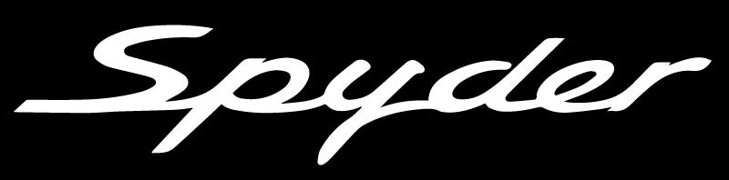
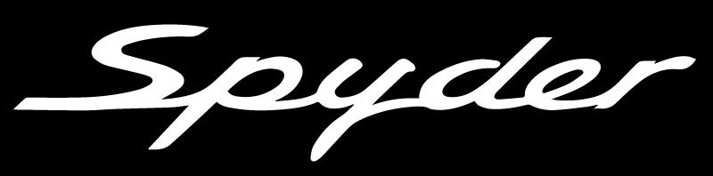

Porsche

Historia
1948-1950
Marcada por la Guerra
Aunque la historia del fabricante alemán comienza oficialmente con el desarrollo del modelo 356 (1948), lo cierto es que, años antes, Ferdinand Porsche ya había diseñado varios proyectos para otras marcas a través de su propia oficina de ingeniería. De hecho, suyo es el Volkswagen Beetle, vehículo del que adquirieron sus rasgos los primeros Porsche. Es en la localidad austríaca de Gmünd donde, en el verano de 1947, Ferry Porsche comienza a construir el roadster biplaza con motor trasero y chasis de aluminio basado en el proyecto Volkswagen que había iniciado su padre. En febrero del año siguiente, el 356 “Nº 1” está listo para rodar y compite en Innsbruck -obtiene el mejor resultado de su categoría-, como una puesta a punto de cara a su posterior producción. Le sigue el prototipo 356/2, también creado sobre la base de un chasis de aluminio diseñado por Erwin Komenda: en 1950 ya hay fabricadas 52 unidades en versión coupé y cabrio. Este crecimiento hace que, un año antes, la producción vuelva a Stuttgart, donde en la década de los treinta Ferdinand había puesto en marcha su oficina de ingeniería.

MODELOS
MODERNOS


un superdeportivo de 650 CV de potencia, con un tren de rodaje de altísimas prestaciones, un diseño aún más agresivo que el de los 911 que conocemos hasta la fecha - lo más "gordo" que conocíamos era un 911 Carrera 4S de 450 CV - y un estatus de verdadero icono. Todos los Porsche 911 llevan motores turboalimentados hasta la fecha, pero solo uno merece llevar la palabra "Turbo S" con mayúsculas en su parte trasera.
Especificaciones
- > Motor: Boxer 6 Turbo de 3,7 litros
- > Potencia: 641 HP (650 CV)
- > Par motor: 800 N·m
- > Transmisión: Automática de 8 marchas
- > Velocidad máxima: 330 km/h (205 mph)

 

El Porsche 718 Spyder es uno de esos coches realmente deseables, y que todo petrolhead debería experimentar alguna vez en su vida. No solo por exponernos más a los elementos y a la conducción pura que un simple Porsche 718 Boxster, si no por la melodía y aura mítica de su motor 4.0 bóxer atmosférico - no en balde, es el hermano mellizo del Porsche 718 Cayman GT4.
Especificaciones
- > Motor: Boxer 6 de 4 litros
- > Potencia: 414 HP (420 CV)
- > Par motor: 420 N·m
- > Transmisión: Manual de 6 velocidades
- > Velocidad máxima: 301 km/h (187 mph)
Porsche le saca punta una vez más a la actual generación del Porsche 911 y nos presenta a un nuevo Porsche 911 GT3 RS, un modelo que junto al Porsche 911 GT2 RS representa el culmen prestacional del Porsche 911. El nuevo Porsche 911 GT3 RS pone sobre la mesa 20 caballos más que el modelo anterior para un total de 520 caballos, marcando así las distancias con un también renovado Porsche 911 GT3 que se había alzado ya hasta los 500 caballos.
Especificaciones
- > Motor: Boxer 6 de 4 litros
- > Potencia: 513 HP (520 CV)
- > Par motor: 470 N·m
- > Transmisión: Automática de 7 marchas
- > Velocidad máxima: 312 km/h (194 mph)


El Porsche 911 Carrera 4 GTS en sus variantes Coupé y Cabriolet llega avalado por el motor de seis cilindros de 3.8 litros de los Carrera S con un nuevo sistema de admisión que permite extraer 408 CV a 7.300 rpm. El 4 de su nomenclatura hace referencia, obviamente, al sistema de tracción integral inteligentePorsche Traction Management.
Especificaciones
- > Motor: Boxer 6 de 3.8 litros
- > Potencia: 402 HP (408 CV)
- > Par motor: 550 N·m
- > Transmisión: Automática de 7 marcha
- > Velocidad máxima: 310 km/h (193 mph)
CLÁSICOS
Porsche 911 80's
El modelo original del Porsche 911 (a veces también llamado Classic 911), es el primer modelo de la larga saga del Porsche 911, uno de los emblemas más prestigiosos desarrollados por el fabricante alemán Porsche.Se desarrolló como un reemplazo mucho más potente, más grande y más cómodo para el Porsche 356. El nuevo automóvil hizo su debut público en el Internationale Automobil-Ausstellung de 1963,4 mejor conocido como el Salón del Automóvil de Fráncfort.
Especificaciones.
- > Motor: Bóxer de 6 cilindros de 3.3 litros
- > Potencia: 325 HP (330 CV)
- > Par motor: 431 N·m
- > Transmisión: Manual de 5 velocidades/li>
- > Velocidad máxima: 275 km/h (171 mph)


Porsche 550 Spyder
El Porsche 550 era un pequeño deportivo biplaza de tracción trasera y de extrema ligereza. No disponía de ningún tipo de techo, de ahí la denominación "Spyder". Por su buena aerodinámica, con una potencia de 110 CV a las 6200 rpm y 121 N·m de par motor máximo a las 5000 rpm, le permitían alcanzar los 220 km/h.
Especificaciones.
- > Motor: Bóxer de 4 cilindros atmosférico
- > Potencia: 108 HP (110 CV)
- > Par motor: 121 N·m
- > Transmisión: Manual de 4 velocidades/li>
- > Velocidad máxima: 220 km/h (137 mph)